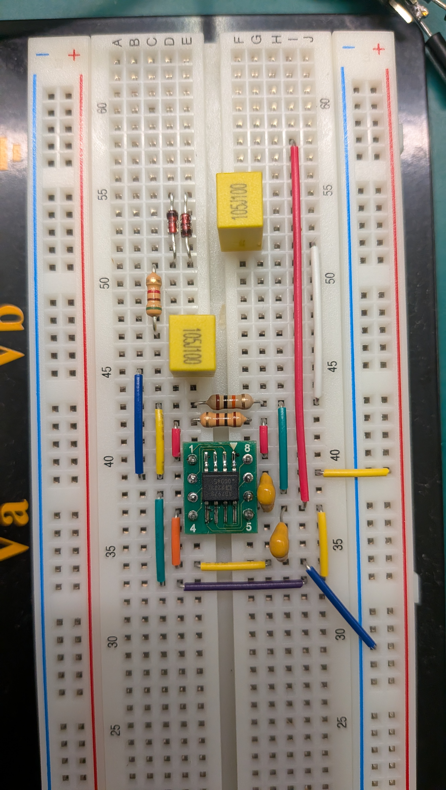
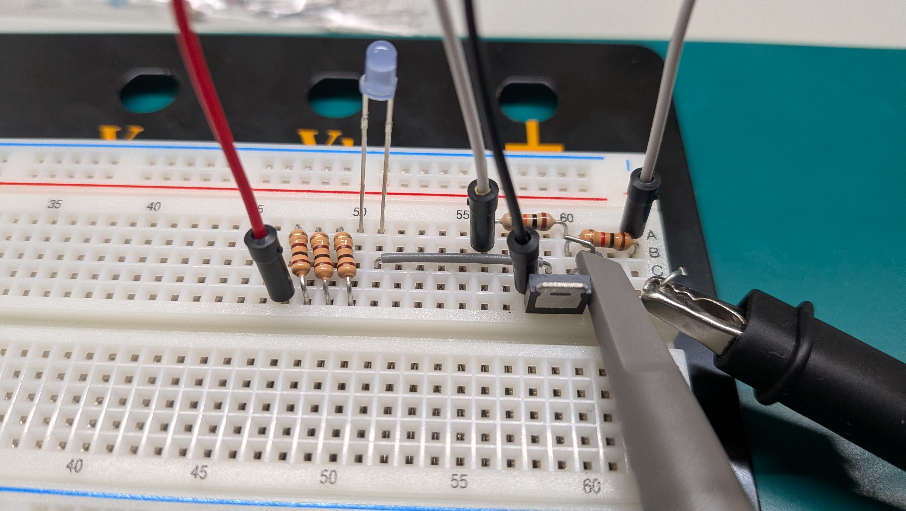

PROJECT SUMMARY プロジェクト概要（要約）
数億円・極低温の設備を必要とする既存の量子コンピュータの常識を覆し、地球磁場と自作ハードウェアのみで室温動作する『卓上量子コンピュータ』を開発・民主化するプロジェクトです。
現在、量子コンピュータのハードウェアは大企業や一部の研究機関に独占されており、学生や個人が直接触れて実験できる環境がありません。そこで本プロジェクト（NMRQCP）では、人工的な強磁場の代わりにどこにでも存在する「地球磁場（約50μT）」を利用するEFNMR（地球磁場核磁気共鳴）方式を採用。250mのエナメル線を手巻きしたコイルやM5Stack、超低歪オペアンプ回路を自作し、誰もが机の上で量子ビット（純水中のプロトン）の操作・観測を行えるオープンソース環境の構築に挑んでいます。
QUICK LINKS 各種リンク・開発記録
01 // BACKGROUND & STORY 量子コンピューターを自作することになった経緯・背景
量子力学・量子コンピューターの出会い、中学の自由研究
私は中学2年生の時に量子力学を知り、量子力学の現実離れしているけどもその理論により世界が成り立っているというところにとても惹かれ、量子力学に興味を持ちました。そこで、中2の時に身近にあるもの（CD、ホログラムカードケース、覗き見防止フィルム）を用いて二重スリット実験を行いスリットの幅を算出するという自由研究を行いました。

▲ 中学2年時の自由研究：身近な素材を用いた二重スリット実験
その後、『量子超越』という本で量子コンピューターを知り、その可能性と自分が好きな量子力学とものづくりが融合した量子コンピューターにとても惹かれるようになりました。そして、IBM Quantum Composerを用いて量子アルゴリズムの検証などを中3の自由研究として行いました。そして、将来量子コンピューターのハードウェアの開発職に就きたいと考えるようになりました。

▲ 中学3年時の自由研究：IBM Quantum Composerを用いた量子アルゴリズムの検証
量子コンピューターのハードの縁のなさ
先ほど話したように、量子コンピューターのソフトウェアの面には触れることができましたが、特に興味を持っているハードの部分には見学をするくらいしかなく、ほぼ触れることができません。私は小さい頃から「ないなら作る」ということをしてきました。そこで、中3の時に「量子コンピューターは自作できないのか？」と疑問に思い調べましたが、最低でも30万円はかかることがわかり、一度諦めました。
EFNMRという方式の発見
私は、高専に入学したからにはやはり量子コンピューターに関して何かしらのアクションを起こしたいと考え、再度量子コンピューターを自作することができないのかと調べまくったところ、地球磁場核磁気共鳴（EFNMR）方式であれば10万円ほどで始められることを知りました。
「これだ」と思い、EFNMR方式で量子コンピューターを自作することを決意し、早速その詳細を調べながら、Pythonで信号のシミュレーションをすることから始めました。
02 // PROJECT DETAILS & ARCHITECTURE EFNMR量子コンピューター自作プロジェクトの詳細
動作原理
- ① スピンの初期化： 巨大なコイルに電流を流しプロトン（純水）のスピンの方向を揃えて量子bitの |0〉の状態にします。
- ② シーケンスの切り替え： MOSFETとリレーユニットを用いて、コイルに電流を流す回路とプロトンの発する微小な信号を増幅してPCに読み込む回路の切り替えを行います。
- ③ 信号の増幅： スピンが地球磁場方向へ元の状態に戻ろうと歳差運動する時に発する微小な信号（FID信号）をコイルで捉え、先ほどの信号増幅回路（アンプ）で増幅して、サウンドカードを通してPCに読み込みます。
- ④ 解析： ③で読み込んだ信号をPythonでFFT解析やノイズの処理を行い量子状態を観測します。
システム構成
- ・マイコン： M5Stack（CoreS3 Lite ＋ ミニリレーユニット）
- ・コイル： 0.5mmのエナメル線を250m分（1600ターン）塩ビ管に手巻きしたもの
- ・プロトン： 純水（精製水）
- ・分極回路： 完全密封型鉛蓄電池（電源ノイズ防止のため）、MOSFET（2SK4017）、ヒューズ
- ・アンプ回路： 超低歪低雑音オペアンプ（AD797BRZ）、コンデンサ、ファストリカバリーダイオード（サージ対策）

▲ 自作したEFNMR量子コンピューターのプロトタイプ全体（手巻きコイル、鉛蓄電池、M5Stack、アルミケース内アンプ回路）

▲ 超低歪低雑音オペアンプ（AD797BRZ）とフィルムコンデンサ・ダイオードによる受信回路

▲ ブレッドボード上でのMOSFETスイッチング回路検証
＋ さらに詳しい技術仕様・今後のロードマップを見る
【現在の到達点】
M5Stackによる50msデッドタイム制御とリレー切り替え、およびAD797BRZを用いた受信回路を統合し、地球磁場下におけるプロトンのラーモア周波数帯域（約2.04kHz）の減衰正弦波（FID信号）の観測に成功しています。
【今後の開発ロードマップ】
・フェーズ1（現在）： ノイズ対策（シールド強化・デジタルフィルタリング）とFID信号の安定観測
・フェーズ2（中期）： Tang Nano 20K（FPGA）＋ R-2RラダーDACによる共鳴RFパルス（π/2パルス・πパルス）照射の統合
・フェーズ3（最終目標）： スピンエコー法や量子アルゴリズムの物理的再現、および回路図・コードのオープンソース化
03 // DEVELOPMENT LOGS これまでの開発記録とこれからの開発記録
これまでの開発記録は、Zennの本に公開しています。しかし、これまでの開発記録の文章作成にはAIを使用しています。理由は、このプロジェクトは2026年4月ごろから始めていますが、インターネットに情報を本格的に書き始めたのは2026年9月ごろだったためです。
なお現在は、量子コンピューターの各部分の回路を作り終え、信号を受信することに成功しました。しかし、デッドタイムとノイズの問題で信号が綺麗に出ていないので、今後はそれらの対策の記録を投稿します。
04 // DEMOCRATIZING QUANTUM HARDWARE 量子コンピューターのハードの民主化
先ほど述べたように、私は量子コンピューターのハードとの関わりが無さすぎます。私は、量子コンピューターは近い将来に今のAIのようにとても重要なものになると考えています。なので、量子コンピューターのハードと縁がないと、これからの社会についていけないとも考えています。現状、AIを理解・上手く利用している人としていない人では格差が生まれています。
そこで、誰もが今のうちに少しでもいいから量子コンピューターを知る必要があります。そして、理論として知っているだけと、実際に触れて見て経験した人では違いがあります。なので興味のある人やエンジニアは、量子コンピューターのソフト・ハードに触れる必要があります。
しかし、現状ではソフトに触れられる機会はあっても、ハードに触れられる機会はほとんどありません。ハードもソフトのように誰でも触れられる環境が必要です！
そこで、私はこのプロジェクトで、自分と同じように量子コンピューターのハードに触れたい学生・エンジニアなどが、より容易に触れ合えるように、最終的には、安く簡単に作れる量子コンピューターを作ります！
ぜひ暖かく見守っていただけると幸いです。
05 // ORIGIN OF "NMRQCP" & POSTER プロフィール名の由来（余談）＆ プロジェクトポスター
「NMRQCP」の由来
プロフィール名でもあり、量子コンピューターを自作するプロジェクト全体の名前でもあるNMRQCPというのは、地球磁場核磁気共鳴量子コンピューターを英語にした時の「Earth's Field Nuclear Magnetic Resonance Quantum Computer」の頭文字をとりEFNMRQC、ですが長すぎるのでEFを省略してNMRQCとなり、そこにProjectの頭文字をとって「NMRQCP」としました。